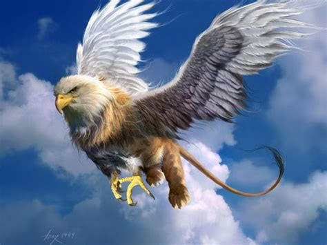

The griffin, griffon, or gryphon (Ancient Greek: γρύψ, grū́ps; Classical Latin: grȳps or grȳpus; Late and Medieval Latin: gryphes, grypho etc.; Old French: griffon) is a legendary creature with the body, tail, and back legs of a lion; the head and wings of an eagle; and sometimes an eagle's talons as its front feet. Because the lion was traditionally considered the king of the beasts, and the eagle the king of the birds, by the Middle Ages, the griffin was thought to be an especially powerful and majestic creature. Since classical antiquity, griffins were known for guarding treasures and priceless possessions. In Greek and Roman texts, griffins and Arimaspians were associated with gold deposits of Central Asia. Indeed, as Pliny the Elder wrote, "griffins were said to lay eggs in burrows on the ground and these nests contained gold nuggets." In medieval heraldry, the griffin became a Christian symbol of divine power and a guardian of the divine.
The ultimate origins of The Griffin are shrouded in mystery, but we do know that this fearsome beast is mentioned in both ancient Iranian and ancient Egyptian texts. Yet another chimera, like Ammit, the Griffin features the head, wings, and talons of an eagle grafted onto a lion's body. Since both eagles and lions are hunters, it's clear that the Griffin served as a symbol of war, and it also did double (and triple) duty as the "king" of all mythological monsters and the staunch guardian of priceless treasures. On the premise that evolution applies every bit as much to mythical creatures as it does to those made of flesh and blood, the Griffin must be one of the best-adapted monsters in the Egyptian pantheon, still going strong in the public imagination after 5,000 years!